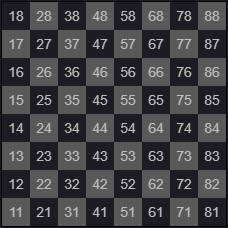

Правила игры в русские шашки
В России наиболее популярен именно этот вид шашек. Игра ведется на шашечной доске на 64 клетки. У каждого игрока по 12 фишек, которые выставляются на темные клетки первых трех рядов доски. Первым ходит игрок с белыми фишками.
-
Особенности игры:
- Ход осуществляется по диагонали по темным клеткам на незанятые поля. Игроки ходят поочередно.
- Если на пути находится фишка противника, по правилам ее необходимо сбить. В этом случае шашка «перепрыгивает» через клетку по диагонали, а сбитая фигура соперника выходит из игры (этот процесс называется «взятие»).
- Дамка может ходить прямо и по диагонали, а также вперед и назад на любое количество клеток.
Цифровая нотация
|
Цифровая нотация — код, обозначающий каждое поле шахматной доски двузначной цифрой (см. диаграмму; числа на полях относятся к алгебраической нотации). Ход записывается четырёхзначной цифрой: указывается поле, с которого идёт фигура, и поле, на которое она передвинута. Обозначения фигур и другие знаки (шах, мат и другое) опускаются. Рокировка записывается только ходом короля (для белых: короткая — 5171, длинная — 5131; для чёрных соответственно — 5878 и 5838). При превращении пешки, достигшей 8-й (1-й) горизонтали, в фигуру к ходу пешки добавляется цифра, обозначающая фигуру, в которую она превращена: 1 — ферзь, 2 — ладья, 3 — слон, 4 — конь. Пример записи начальных ходов открытого варианта испанской партии в алгебраической и цифровой нотациях: |
 |
|---|
| Алгебраическая | Цифровая |
|---|---|
| 1. е2—е4 е7—е5 | 1. 5254 5755 |
| 2. Kg1—f3 Kb8—с6 | 2. 7163 2836 |
| 3. Cf1—b5 а7—а6 | 3. 6125 1716 |
| 4. Сb5—а4 Kg8—f6 | 4. 2514 7866 |
| 5. 0—0 Kf6:е4 | 5. 5171 6654 |
| 6. d2—d4 b7—b5 | 6. 4244 2725 |